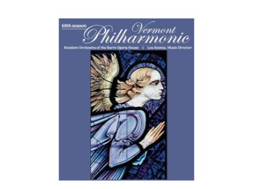

What's on near Brandon
What
When
Where
Showing every event from calendars near Brandon, Vermont.
· ·
Your location stays on this device.
Wednesday 11 November · today
Veterans Day Ceremony
social
Join us in honoring our Veteran community., powered by Concept3D Event Calendar Software

Hilary Harnischfeger Artist Lecture
art
Hilary Harnischfeger (b. 1972, Melbourne, Australia) is known for her multimedia sculptures which she conceptualizes as “drawings” that extend into three-dimensional space. Her work often explores the organization of space and the…

Movement Matters: Grounded Up with Tomo Sone
dance
Slow down, stretch out, and enjoy a playful movement journey inspired by the peaceful rhythm of nature.

Bright Line Watch: Tracking the Health of U.S. Democracy
social
The Rohatyn Center for Global Affairs program on Global Trends in Autocracy and Democracy presents “Bright Line Watch: Tracking the Health of U.S. Democracy” with Brendan Nyhan.


Dharma Reflection by Daigan Widell
social
When: Every Wednesday evening at 5:30pm. Where: In person 76 Court Street Middlebury VT and online via Zoom (click here for the zoom link) Details: This is a time to […]

You Can See Everything
filmAlso showing at The Marquis in Middlebury through Nov 19.
Sleep
music$50
All Ages--Today, the legendary band Sleep releases new single “Have Spacesuit Will Travel” via Third Man Records, their first new music since 2018. In addition, the band announces a fall North America

Deep Dives Talk Series
outdoors
History lies in the depths of Lake Champlain, waiting to share its secrets and stories. In 2026, we’re opening up our vaults and taking a DEEP DIVE into the past with Museum experts, archaeologists, historians, and educators in our free…
Weekly Beginner West African Djembe Classes
music
Celebrating 30 years of ethnic hand percussion, Drum Journeys of Earth welcomes all members of the community to join their classes in ethnic drumming and percussion, including West African djembe, Afro-Latin conga, Middle Eastern doumbec…

Architecture + Design Film Series: The Desert of Forbidden Art
film
During Stalin’s Soviet era, Igor Savitsky collected more than 40,000 beautiful, colorful, powerful and rarely seen works by artists experimenting in a brash, avant-garde style. These works, at odds with the drab realism favored by the…

Describe the Night
theater
In 1920, the Russian writer Isaac Babel reports on a Red Cavalry campaign in Poland. In 1989, a mysterious KGB agent spies on a woman in Dresden and falls in love. In 2010, a plane carrying most of the Polish government crashes in the…
Thursday 12 November · tomorrow


Professionalizing the Environment: Architecture and Regulation in the Age of Ecology
social
This lecture considers the rise of the American environmental movement as a driver of changes in professional-managerial expertise.

Talk: Mosques of Mud, Bazaars, and Mirrors: Thresholds of Muslimness, with Zahra Moeini Meybodi
social
Join us for a talk from Middlebury Muslim Chaplin and Interfaith Advisor, Zahra Moeini Meybodi. Her talk entitled “Mosques of Mud, Bazaars, and Mirrors: Thresholds of Muslimness,” is based on primary research she has undertaken on travels…


Open Table: Broken in Pieces (a Social Koan)
socialOnline (Zoom).
With Joshin Byrnes As we practice more and more in direct service, we will be invariably confronted with the question of how we find our way through the impossible situations that arise in our neighborhoods and society? At this Open Table…


Punch Brothers
musicA Higher Ground Presents show at another venue.
Punch Brothers, formed by mandolinist Chris Thile in 2006, is known for pushing the boundaries of acoustic music. In addition to Thile, the band currently comprises guitarist Chris Eldridge, bassist Paul Kowert, banjoist Noam Pikelny, and…

Albertine Film Festival: L'Étranger (The Stranger)
film
In 1930s French Algeria, indifferent Frenchman Meursault faces upheaval after his mother’s death and a fatal beach encounter with an Arab man, leading to a trial that scrutinizes his detached character in this adaptation of Albert Camus’s…

Hirschfield International Film Series: La Bola Negra
film
Spanning 1932, 1937, and 2017, three men confront the ghosts of a Spain torn between desire and repression. Carlos fights for acceptance, Sebastián falls in love across the battle lines of the Civil War, and Alberto unearths a family…

Tartuffe
theater$15-$39Also a 2:00 pm matinee on Nov 15.
Molière's con-man classic gets a modern makeover, swapping powdered wigs in Paris for velour tracksuits at a granite-countered New England McMansion.
Describe the Night
theater
In 1920, the Russian writer Isaac Babel reports on a Red Cavalry campaign in Poland. In 1989, a mysterious KGB agent spies on a woman in Dresden and falls in love. In 2010, a plane carrying most of the Polish government crashes in the…

Story Slam: What Now?
social
Join Queen City Vermont Indivisible and your neighbors for an evening of stories, laughter, community and delicious baked goods! Come to listen or tell your own story. Hosted by Sue Schmidt. Calling all Storytellers!!! Do you have a story…

Italian Conversation Group
social
Esercitati a parlare italiano! Practice speaking the Italian language and meet others learning and native speakers. This group is best for those who can speak Italian in basic sentences, at a minimum.
Friday 13 November

Infinite Circle Community: Tea with the Teachers
socialOnline (Zoom).
Tea with the Teachers is a time for Infinite Circle Community members to discuss their practice with the teachers and the wider community. We explore together how we are practicing […]

Tanasi
musicPlease confirm the time with the venue.
Three roots musicians who've played Carnegie Hall and the Ryman bring their globe-spanning bluegrass sound to Town Hall Theater
Good Time Line Dancing
dance$15-$18
All Ages--Get ready to hit the Higher Ground dance floor with Good Time Line Dancing! Founded by Vermont instructor and choreographer Andrea Warren, Good Time Line Dancing has been bringing line danci
Tartuffe
theater$15-$39Also a 2:00 pm matinee on Nov 15.
Molière's con-man classic gets a modern makeover, swapping powdered wigs in Paris for velour tracksuits at a granite-countered New England McMansion.

Maryna Krut, Bandura
music
The Russian invasion of Ukraine transformed Bandura virtuoso Maryna Krut from being a singer and performer updating a beautiful tradition of music to being a witness testifying around the world about the devastating war in her homeland.…


A Drag Queen Christmas
theater$30-$75 + fees
7:30PM Lobby doors open: 6:30PM Seating begins: 7PM Tickets: $30, $55, $75 + tax/fees Age Restriction: 18+ Complimentary vouchers are not valid for this performance. Murray & Peter Present “A Drag Queen Christmas” hosted by Nina West.…
Carbon Leaf
music$30-$35
All Ages--Carbon Leaf’s fifteenth studio album, Time is the Playground is both a call to action and an embrace of the moment. Marrying nostalgic storytelling to nuanced, folk-infused indie rock, the R

Describe the Night
theater
In 1920, the Russian writer Isaac Babel reports on a Red Cavalry campaign in Poland. In 1989, a mysterious KGB agent spies on a woman in Dresden and falls in love. In 2010, a plane carrying most of the Polish government crashes in the…
Saturday 14 November


Judy Collins: Farewell Tour with the Vermont Symphony Orchestra
music$70-$175 + fees
7PM Lobby doors open: 6PM Seating begins: 6:30PM Tickets: $70, $90, $105, $175 + tax/fees Complimentary vouchers are not valid for this performance. This event is made possible through the generous support of Jennifer and Fred Bagley…
Fitter Happier: A Radiohead Tribute
music$17-$20
All Ages--On November 14, Jeff Beam & his friends perform in Burlington as Fitter Happier: A Radiohead Tribute. The band from Portland, Maine will deliver a full night of the music of Radiohead at the
Tartuffe
theater$15-$39Also a 2:00 pm matinee on Nov 15.
Molière's con-man classic gets a modern makeover, swapping powdered wigs in Paris for velour tracksuits at a granite-countered New England McMansion.
Describe the Night
theater
In 1920, the Russian writer Isaac Babel reports on a Red Cavalry campaign in Poland. In 1989, a mysterious KGB agent spies on a woman in Dresden and falls in love. In 2010, a plane carrying most of the Polish government crashes in the…

Sunday 15 November

Welcome Blanket Project
social
Join the Henry Sheldon Museum and students in Professor Carrie Anderson’s seminar Between Art, Craft, and Industry: Textiles and Migration in New England to make a community Welcome Blanket.

Middlebury College Community Chorus
music
In America’s 250th year, the Middlebury College Community Chorus will explore themes related to our shared history. This will include traditional choral music, folk music, and musical theater selections. You’ll also hear texts…
Upper Valley Symphony Orchestra
music
Under the direction of conductor Mark Nelson, the Upper Valley Symphony Orchestra presents its fall concert at the Lebanon Opera House. Opening with Aaron Copland’s bracing Fanfare for the Common Man, the program features Brahms’s peerless…

Sangha Sundays: Exploring Buddhist First Principles in Our Lives
socialFree
Curious about the Buddha’s core teachings? Perhaps a bit befuddled by the Four Noble Truths, karma, dependent origination, the paramitas, renunciation, or emptiness? Join Kendo for a monthly circle of […]

VSO Jukebox: Jukebox Turns Ten
musicPay-what-you-can $15-$30 + fees
4PM Lobby open and seating begins: 3:30PM Tickets: Pay-What-You-Can $15, $20, $25, $30 + tax/fees All tickets are seated General Admission. Availability will be based on a first come, first served basis. The audience will sit on stage…
Vermont Roots Music Collective Youth Music Showcase
musicFree
Vermont Roots Music Collective gives some of Addison County’s best young musicians a real stage, a full professional sound setup, and a packed room. 2nd Balcony Jazz Band opens the afternoon with jazz, and The Seraph headlines. Come cheer…
Stewart Copeland - Have I Said Too Much
musicA Higher Ground Presents show at another venue.
Describe the Night
theater
In 1920, the Russian writer Isaac Babel reports on a Red Cavalry campaign in Poland. In 1989, a mysterious KGB agent spies on a woman in Dresden and falls in love. In 2010, a plane carrying most of the Polish government crashes in the…
Monday 16 November

Ghost of Coral Reefs Past: Reconstructing Reef Shark Communities over Millennia
outdoors
The Rohatyn Center for Global Affairs program on Science, Technology, Environment and Global Affairs presents “Ghost of Coral Reefs Past: Reconstructing Reef Shark Communities over Millennia” with Erin Dillon.

Meditation for a Shared World
socialFreeOnline (Zoom).
During the month of November, we will be offering an experiential series on Buddhist meditation exploring the different styles of meditation practice that have arisen as the Dharma evolved over […]
Tuesday 17 November
Knitting & Fiber Arts Circle
artFree
Please join other knitters and fiber artists for crafting and conversation! Learn how to crochet or knit. Or bring your current project to work on with everyone! \n

Middlebury Afropop Band and African Music and Dance Ensemble Joint Concert
music
Middlebury Afropop Band and African Music and Dance Ensemble Joint Concert
Public Art, Monuments, and What We Choose to Remember (lecture)
socialFree
The VTSU Castleton Soundings Program in partnership with the Vermont Humanities Speakers Bureau presents "Public Art, Monuments, and What We Choose to Remember". Join artist and educator Jen Berger for a presentation that places monuments…

Dark Star Orchestra
music$40-$60 + fees
7:30PM Lobby doors open @ 6:30PM Seating begins @ 7:00PM Tickets: $40, $50, $60 + tax/fees Complimentary vouchers are not valid for this performance. Performing to critical acclaim for nearly 30 years and over 3300 shows, Dark Star…
Wednesday 18 November

Jamie Wyeth & the Unflinching Eye
art
See the first feature documentary on painter Jamie Wyeth, who turned the same unflinching eye on JFK, Andy Warhol, and the animals on his own Maine farm.

Mid Day Organ Recital with Robert Ludwig
music
Robert Ludwig performs a marvelous selection of organ music on the grand Gress-Miles pipe organ in the College Chapel at Middlebury College. Enjoy a bit of music during the Wednesday passing period! Come and go as your schedule requires.…

Imani Winds and Stewart Goodyear, Piano
music
The Grammy award-winning Imani Winds joins forces with dynamic pianist and composer Stewart Goodyear.

MCMT's The Addams Family
theater
This hilarious Broadway musical brings everyone's favorite spooky family to life in a story filled with love, laughter, and a little bit of the macabre.
Thursday 19 November

Lebanon High School Fall Concert
music
Join the award-winning Lebanon High School music program for their annual fall concert, featuring performances by the Concert Band, Chorus, ...
Wind Symphony Concert
musicFree
The VTSU Castleton Wind Symphony, directed by Professor Joshua Thompson, presents a night of musical entertainment! Soundings students may only attend ONE of the three VTSU Castleton Music Program’s Concerts for credit. These concerts…

Quality Ski Time Film Tour
film$15 + fees
7:00 PM Doors open at: 6PM Tickets: $15 + tax/fees Ski movies will forever be a part of ski culture. Nothing else can match the community and excitement created by watching films with friends. So, why would you settle for just one film?…
MCMT's The Addams Family
theater
This hilarious Broadway musical brings everyone's favorite spooky family to life in a story filled with love, laughter, and a little bit of the macabre.

After Hours at the Anderson
music
The Anderson Studio turns into a dance club for one night, with techno, hip-hop, and live visuals until midnight.

Friday 20 November


Tara McGowan & the Art of Japanese Paper Theatre
theater
Tara McGowan & the Art of Japanese Paper Theatre -

MCMT's The Addams Family
theater
This hilarious Broadway musical brings everyone's favorite spooky family to life in a story filled with love, laughter, and a little bit of the macabre.

PLUCKED: Film Screening
film
Over the course of one elegant dinner party, a marriage comes violently, and hilariously, apart.
Patty Casey, Colin McCaffrey & Erica O'Hara
music$20 online / $25 at door
Saturday 21 November
Community Toy Swap
socialFreeIncluded by your exception (the Burnham Presents venue).
Please join us for the fourth annual Community Toy Swap in Lincoln, VT! This is an event where you will find like-new toys, games, puzzles, and other items, all FREE for the taking! Open to EVERYONE, objectives of the event include…

The MET: Live in HD - Macbeth
film
Verdi’s thrilling take on the immortal Shakespearean drama centers on the doomed Scottish king, haunted by the ghosts of his murderous ascent to the throne, and his power-mad wife, whose ruinous ambition damns them both.


The Nutcracker (Syracuse City Ballet)
dance$21.50-$46.50
Celebrate the magic of the holiday season with The Nutcracker, Syracuse City Ballet's beloved annual tradition. Featuring Tchaikovsky's iconic score, dazzling choreography, exquisite costumes, this timeless holiday ballet delights…

Golden Girls: The Laughs Continue
theater$29-$59 + fees
7PM Lobby doors open: 6PM Seating begins: 6:30PM Tickets: $29, $39, $49, $59 + tax/fees Contains adult themes, recommended for ages 18+ The Golden Girls are back in an all-new show! 2026 finds Sophia out on bail, after being busted by…
Greg Freeman
music$25-$27
All Ages--Greg Freeman, All Set The BoneGreg Freeman won’t be getting comfortable anytime soon. Across New Mexico, Vermont, Los Angeles, and a long stretch of tour stops hooking those places together,

Printmaking on Fabric Workshop
art$80FULL/WAITLIST.
Dive into printmaking in this one day workshop! Design an original print, carve your own stamp, and use our press to complete table linens that you can bring home in time for Thanksgiving! Each participant will make 4 napkins and 1 table…
Sunday 22 November

An Afternoon of Ease and Joy (Hybrid Half-day Retreat)
socialFree
The 13th century Zen master, Dogen Zenji described zazen (meditation) practice as, “the dharma-gate of Ease and Joy.” Bread Loaf Mountain Zen Community invites you to join us in-person and […]
Creative Canvas, all ages
artThe page labeled this date "Saturday"; please confirm — Nov 22, 2026 is actually a Sunday.
The Nutcracker (Syracuse City Ballet)
dance$21.50-$46.50Second part of the Nov 21/22 run.
Celebrate the magic of the holiday season with The Nutcracker, Syracuse City Ballet's beloved annual tradition. Featuring Tchaikovsky's iconic score, dazzling choreography, exquisite costumes, this timeless holiday ballet delights…

The Brother Brothers at Burnham Presents
musicIncluded by your exception.
“wonderful ... fabulous old-time playing and sibling harmony.” — NPR


Warren Miller Presents: Days Off
film
Follow along with Warren Miller's 77th installment, DAYS OFF, chasing unscripted joy across Alaska, Canada, Japan, Deer Valley, France and more.
The Nutcracker (Syracuse City Ballet)
dance$21.50-$46.50
Celebrate the magic of the holiday season with The Nutcracker, Syracuse City Ballet's beloved annual tradition. Featuring Tchaikovsky's iconic score, dazzling choreography, exquisite costumes, this timeless holiday ballet delights…
Tuesday 24 November

Precepts Renewal Ceremony
social
Every month on the full moon, we recommit ourselves to the peacemaker precepts in a beautiful ceremony of chanting and bows (fusatsu) held during meditation. Register here for the Zoom link to […]
Wednesday 25 November

Dharma Talk by Jitsujo T. Gauthier
social
When: Every Wednesday 5:30pm Eastern Time Where: In person 76 Court Street Middlebury VT and online via Zoom (click here for the zoom link) Details: This is a time to […]
Friday 27 November

Saturday 28 November

No Strings Marionette Company Presents Scrooge, A Christmas Carol
theater
364e7289-f1bc-4f05-8c59-2f0e0b4f7ef4

Dead Set: A Celebration of the Grateful Dead
music
Adventurous jams, soulful guitar, and the timeless music of the Grateful Dead, with room to dance.
Sunday 29 November

Monday 30 November

Low-Tech Drop In Printmaking Workshop (adults and teens)
art
Low-Tech Drop In Printmaking Workshop (adults and teens) -
Bonobo
music$40-$45
All Ages--“Oh yeah, I guess I did do some of that stuff," says Simon Green, as he reflects on his 25-year-plus career as the man behind the music of Bonobo. It’s a typically self-effacing respons
Tuesday 1 December

Jazz Ensemble Concert
musicFree
The VTSU Castleton Jazz Ensemble, directed by Professor Michael Craner, presents a night of musical entertainment! Soundings students may only attend ONE of the three VTSU Castleton Music Program’s Concerts for credit. These concerts…
Wednesday 2 December

A Charlie Brown Christmas - Live on Stage!
theater$45-$65 + fees
7PM Lobby doors open: 6PM Seating begins: 6:30PM Tickets: $45, $55, $65 + tax/fees Everyone’s favorite holiday classic comes to life in the touring production A CHARLIE BROWN CHRISTMAS LIVE ON STAGE! Join Charlie Brown, Snoopy, Lucy…

Shibori Scarves Workshop
art$95
Discover the Art of Shibori, a traditional Japanese fabric dyeing method while creating custom-dyed pieces using a variety of resist-dyeing techniques with different silk blends. Experience the luxurious beauty of silk as you discover how…

Raku & Pit Firing Workshop
art$70
Discover the magical process of Raku firing, where fire and smoke combine with creativity to produce stunning, one-of-a-kind pieces. Explore pit firing, experiment with surface decoration, learn about glazing methods, and participate in…
Thursday 3 December
Surveilled (film screening)
filmFree
Produced by Pulitzer Prize-winning investigative journalist Ronan Farrow, "Surveilled" uncovers the insidious ways in which our daily lives are being surveilled by the state. In a gripping chase, Farrow travels across the world following…
Midd Night Stroll
social
Mark your calendars for Midd Night Stroll evenings in downtown Middlebury. Come out from 5:00-8:00pm on Thursday, December 3rd, and Thursday, December 10th, 2026 for specials, promotions, food trucks and pop-ups downtown. Visit Cannon Park…


Fall Dance Concert
dance
Join us in an evening of choreography by students and faculty from Middlebury College Dance Department and the University of Vermont Theatre & Dance Program.

Sophie Shao and Friends
music
No season is complete without our perennial favorite, cellist Sophie Shao, and her talented collaborators. This year, Shao has expanded her circle of award-winning friends to six, who will delight our community with the lush sounds of the…
2DEAD BOYZ + The Underachievers
music$25-$100
All Ages--2DEAD BOYZ is the gritty new incarnation of East Coast hip-hop firebrands Meechy Darko and Zombie Juice, of the Flatbush Zombies. Forged from a decade of macabre creativity, psychedelic expl

Paint and Sip - Winter Paint Along
art$45
Enjoy the holidays with a winter themed guided painting session where you can sip while learning foundational approaches and techniques with acrylics. Whether you
Friday 4 December
Welcome to Night Vale
socialA Higher Ground Presents show at another venue.

Hadestown: Teen Edition
theater
Lebanon High School’s Wet Paint Players takes on the dark musical retelling of the ancient Greek myth of Orpheus and Eurydice.

Fall Dance Concert
dance
Join us in an evening of choreography by students and faculty from Middlebury College Dance Department and the University of Vermont Theatre & Dance Program.

VSO: Holiday Pops
music$10-$45 + fees
7:30PM Lobby doors open: 6:30PM Seating begins: 7PM Tickets: $33, $45 + tax/fees Student tickets: $10 + tax/fees We’re celebrating the season with music that is both reflective and radiant—sending audiences home with a melody in their…
_edited.jpg)

Holiday Gift Bags: Block Printing on Fabric
art$80
Get creative this Holiday season while exploring block printing and textile design! Carve your own stamp and custom print an assortment of festive cotton gift bags! Experiment with colors, patterns, and repeat designs while getting…

Date Night: Wheel Throwing
art$80/couple
Have a date night at the studio! Couples will explore this captivating medium and learn about wheel throwing while spending some quality time together. Experience using a wheel while getting your hands in some clay. Learn about centering…
Saturday 5 December

The MET: Live in HD - Samson et Dalila
film
Saint-Saëns’s operatic take on the classic biblical story follows Samson, the hero of legendary strength, and Dalila, the seductive Philistine whose beauty overpowers him.

Grand Kyiv Ballet Presents the Nutcracker: Symphony of Lights
dance
79497517-a0aa-4ce9-9b25-9f2a8c234dfb
2026 Toys for Kids Holiday Train
social
Come on board Vermont Rail System’s Holiday Train to enjoy decorations, visit with Santa, see an operating holiday toy train layout and help fill the train with new unwrapped toys as part of a holiday toy drive. \n
Hadestown: Teen Edition
theater
Lebanon High School’s Wet Paint Players takes on the dark musical retelling of the ancient Greek myth of Orpheus and Eurydice.
University Chorale Concert
musicFree
The VTSU Castleton University Chorale, directed by Dr Sherrill Blodget, presents a night of musical entertainment! This event is part of the VTSU Castleton Music Department Concert Series. Soundings students may only attend ONE concertfrom…
J. W. Goethe, Urfaust
theater
Join us to celebrate the German Theater Group’s 25th birthday with two performances of Johann Wolfgang Goethe’s “Urfaust” (1772/ 1775).

Kalos at Burnham Presents
musicIncluded by your exception.
Three innovative interpreters and composers of Celtic roots music:
BIOMYTH
music$25-$30
18+--BIOMYTH: The Rave of your FantasyA new immersive rave experience bringing a cinematic dark fantasy environment to Burlington, featuring Brooklyn-based artist nextdimensional and local Vermont DJs
Karina Rykman
music$25-$30
All Ages--Karina Rykman plays bass, sings, jumps around, and laughs a lot. In doing so, she has garnered rare attention and avid listenership. Straddling the worlds of jam rock and indie pop drenched
First Saturday Festivities (Santa!)
socialFree
Downtown Middlebury will be bustling on Saturday, December 5th! First, come get your photos taken with Santa and Mrs. Claus on December 5th from 9:30am – 11:30am indoors at Town Hall Theater. Children can fill out a Letter to Santa…

Fused Glass Workshop: Ornaments and Winter Suncatchers
art$105
Join fused glass artist Caroline Quick for this beginner workshop to create ornaments or winter sun-catchers and immerse yourself in your own, unique artistic journey! These are perfect for brightening up your home or as a gift for someone…

Throwing Larger Pieces
art$55
Looking to learn how to throw larger pieces? This workshop will guide you through the process of gradually creating larger forms on the wheel, working at your own pace and at the level you’re currently at. We’ll work with 3-10 pounds of…
Sunday 6 December
Hadestown: Teen Edition
theaterMatinee; also shown Dec 4-5.
Lebanon High School’s Wet Paint Players takes on the dark musical retelling of the ancient Greek myth of Orpheus and Eurydice.

THT Fall Class Culmination
theater
Puppets, Taiji, monologues, and dance, all from people who spent the fall learning something new at THT.

Hadestown: Teen Edition
theater
Lebanon High School’s Wet Paint Players takes on the dark musical retelling of the ancient Greek myth of Orpheus and Eurydice.
J. W. Goethe, Urfaust
theater
Join us to celebrate the German Theater Group’s 25th birthday with two performances of Johann Wolfgang Goethe’s “Urfaust” (1772/ 1775).


Holiday Wreath Making Workshop
art$115
Celebrate the season, while creating your own Holiday decor! Join Guest Instructor, Karey French of Silver Spring Farm for a hands-on wreath making workshop, where you’ll design and create a 16-inch evergreen wreath using fresh seasonal…
Monday 7 December
Tuesday 8 December
Wednesday 9 December

Four Rational People
theater
Follow the Emerson String Quartet through their final season together, after fifty years and nine Grammy Awards.
Mapping Environmental Governance 2026
outdoors
Although most people are familiar with the global climate change regime, far fewer know about the other hundreds of environmental treaties and agreements covering things like plastic waste, coral reefs, plant genetic resources, persistent…
Thursday 10 December
Midd Night Stroll
social
Mark your calendars for Midd Night Stroll evenings in downtown Middlebury. Come out from 5:00-8:00pm on Thursday, December 3rd, and Thursday, December 10th, 2026 for specials, promotions, food trucks and pop-ups downtown. Visit Cannon Park…
History of Statistics Wax Museum
social
Students in STAT 0261: History of Statistics will portray historical statisticians. Each of the statisticians will open with a brief introduction, followed by an opportunity for attendees to wander and ask all of the burning questions they…
Albert Cummings
music$30-$35
All Ages | Seated Show--Albert Cummings is an American blues guitarist, singer, and songwriter from Massachusetts whose fiery guitar work and soulful voice have made him a standout in modern blues-roc
Hirschfield International Film Series - Title TBA
film
A Hirschfield International Film Series screening. Please check back closer to the event date for the film title.
Friday 11 December

Rutland Youth Theatre Presents: Trolls, Jr.
theater$12-$15 + fees
Three performances: Friday, December 11 @ 7PM Saturday, December 12 @ 2PM & 7PM Tickets: Adults: $15 + tax/fees Children under 18/Seniors over 65: $12 + tax/fees Join Poppy, Branch, and all your favorite Trolls as they discover the power…


Tony Trischka's Holiday Show: Of a Winter's Night
music
Tony Trischka brings his melodic inventiveness to an acoustic celebration of bluegrass and Americana, weaving beloved carols, spirited fiddle tunes, and unexpected gems.
Date Night: Wheel Throwing
art$80/couple
Have a date night at the studio! Couples will explore this captivating medium and learn about wheel throwing while spending some quality time together. Experience using a wheel while getting your hands in some clay. Learn about centering…
Weekly and ongoing

Daily Morning Meditation
WeeklysocialFree
10 events found. Events Events Search and Views Navigation Search Enter Keyword. Search for Events by Keyword. Find Events Event Views Navigation Summary List Month Day Today Now Now - […]
Weekly Free Poetry Workshop
WeeklysocialFree
Community Workshop Online only You will receive an invitation to join the Google Classroom within a week of joining. After accepting the invitation you will be receive notifications from the classroom, including scheduled classes.…
Weekly Politics Luncheon
Weeklysocial
Students, staff, alumni and the public are invited to attend this weekly nonpartisan discussion of recent political events, hosted by Professor Matthew Dickinson. Held almost every Tuesday 12:30-1:30 pm EST. in person and by zoom. Check…


Fundamentals of Oil Painting
Ongoingart$195
This class is designed for beginners and experienced painters who want to develop their painting skills in a relaxed and creative environment. Students will learn the fundamentals of oil painting, including color mixing, lighting…

Holiday Art Market, with extended December hours
Ongoingsocial
A Holiday Giving Market! Find the perfect gift in our gallery full of handcrafted wonders by more than 30 Vermont Artists ! Open 7 days a week! Special December Hours Moonlight Madness Wednesday, December 2 & Thursday, December 10 - Open…
Quiet Landscape: Beauty, Stillness, and Connection (photography exhibit)
Ongoingart
PhotoPlace Gallery provides exhibition opportunities through international juried photo exhibits.

Rohatsu Sesshin: Eight Days of Practice Together
OngoingsocialFree
December 1-8 for commuters and online “There is the case where a practitioner, having gone to the wilderness, to the shade of a tree, or to an empty building, sits […]

Rolling down the Tracks: Holiday Trains!
Ongoingart
The elaborate Lionel train layout at the Henry Sheldon Museum in Middlebury, Vermont is an annual tradition, delighting all ages.
Welcome Blanket Project (drop-in)
Ongoingsocial
Welcome Blanke t is a platform for engagement that transforms the abstract concept of immigration into a tangible crowd-sourced artistic action. We ask you to use your head, heart, hands, and histories to craft the country we wish to see.…